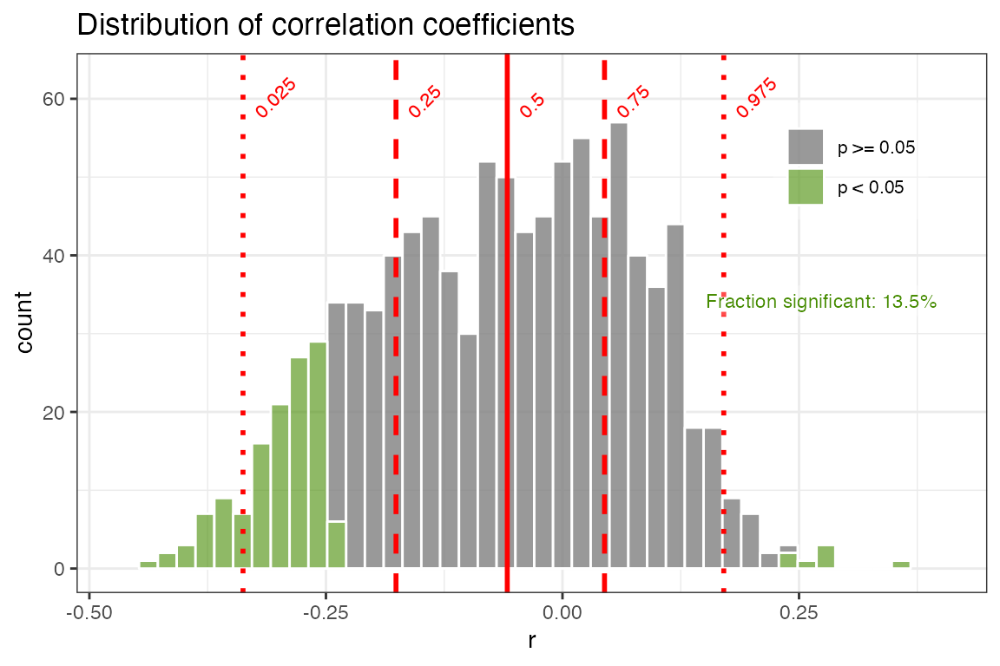
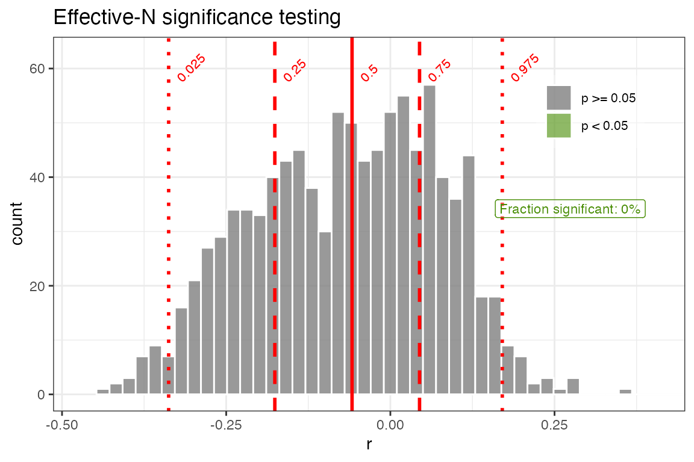
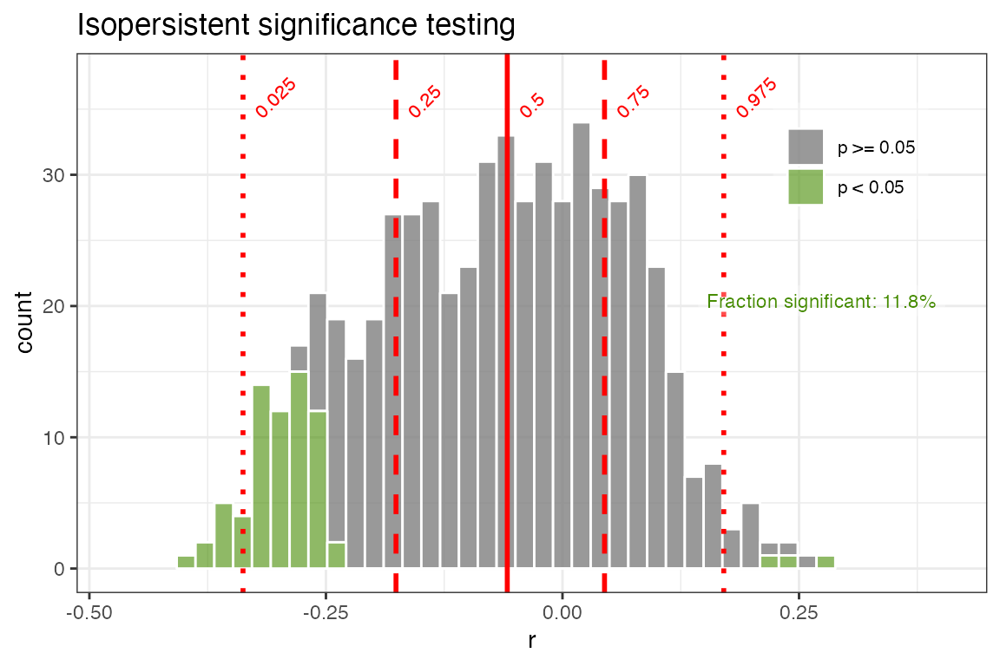
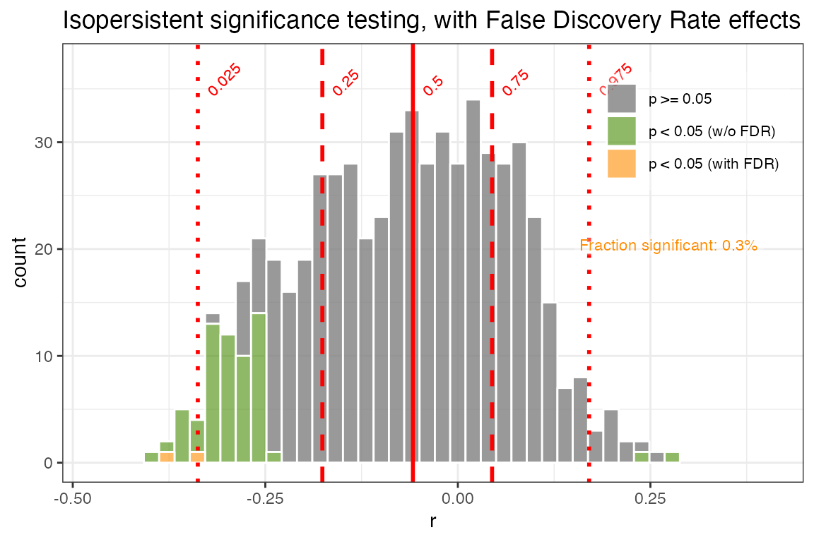
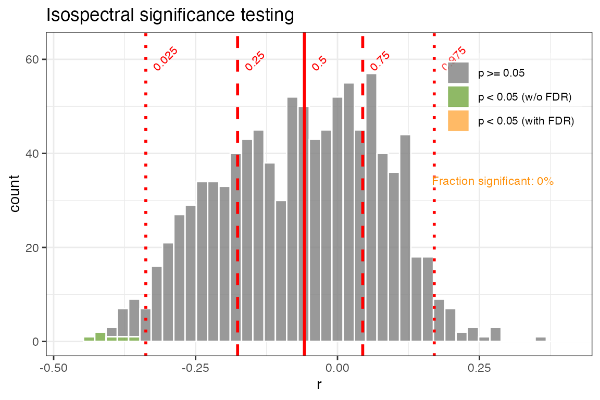
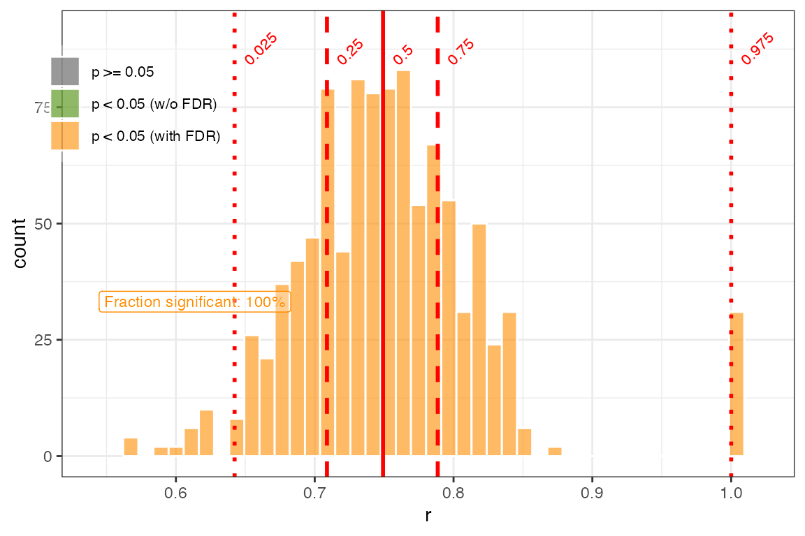

This vignette picks up where the introduction leaves off, we’ve generated age ensembles for two datasets, and now want to explore the relationship between these two datasets. First we’ll load the packages we need.
And the data we generated in the introduction.
loadRemote("https://lipdverse.org/geoChronR-examples/introductionOutput.RData",useSavedNames = TRUE)Let’s take another look at the the two timeseries over the period of
overlap. To calculate age uncertian correlation let use geoChronR’s
corEns function. Note that this approach is, in many ways,
simplistic. Correlating the two age-uncertain datasets will characterize
the relationship, but ignores ancillary evidence that may support a
mechanistic relationship between two timeseries. Still, it illustrates
how age uncertainty can affect apparent alignment between two datasets,
which is the purpose of this example.
corout <- corEns(time.1 = gisp2.ens,
values.1 = gisp2.d18O,
time.2 = hulu.ae,
values.2 = hulu.d18O,
bin.step = 200,
max.ens = 1000,
isopersistent = TRUE,
isospectral = TRUE,
gaussianize = TRUE)Note that there are many parameters available for the
corEns function (check out the help at
?corEns). Some of the key ones to pay attention to are:
bin.step This variable sets the size of the bins that the data will be averaged into to align before correlation. Smaller bins will focus allow examination of shorter timescales, and increase the the sample size, but also increase the number of empty bins, and tend to increase autocorrelation. The right bin size varies depends on the distribution of resolutions in your datasets.
isopersistent and isospectral These need to be set to TRUE if you want to calculate null significance models for significance testing with these methods. On the other hand, turning it off will speed up calculation if you don’t need it.
gaussianize You’ll find the gaussianize option
throughout geoChronR, and it’s typically the default option.
gaussianize will transform the data into a Gaussian
distribution, recognizing that many of the methods and/or their
significance testing assume that the input data are normally
distributed. This options ensures that this is the case.
corEns returns a list that has the key correlation and
significance results for all the selected methods. If percentiles are
provided to corEns, and they are by default, the function will output a
data.frame that summarizes the output.
corout$cor.stats
#> # A tibble: 5 × 6
#> percentiles r pSerial pRaw pIsopersistent pIsospectral
#> <dbl> <dbl> <dbl> <dbl> <dbl> <dbl>
#> 1 0.025 -0.338 0.194 0.00666 0.0142 0.107
#> 2 0.25 -0.176 0.483 0.147 0.181 0.393
#> 3 0.5 -0.0584 0.676 0.395 0.467 0.620
#> 4 0.75 0.0444 0.837 0.672 0.753 0.842
#> 5 0.975 0.170 0.985 0.971 0.981 0.988This gives us a first order sense of the results, but let’s use the
plotCorEns function to dig in deeper.
plotCorEns(corout,
legend.position =c(.85,.8),
f.sig.lab.position = c(.85,.6),
significance.option = "raw",
use.fdr = FALSE)+ggtitle("Distribution of correlation coefficients")
OK, here we see the distribution of correlation coefficients, and their significance. Note that we chose “significance.option = ‘raw’”, so in green we see the distribution of significant correlations as determined by a standard T-test, without any consideration of autocorrelation. In this case, we observe that 13.5% of the correlations are signficant. Of course we know this is a very simplistic approach, and that with many paleoclimate datasets we must consider the impact of temporal autocorrelation, which can readily cause spurious correlations. geoChronR addresses this point using three approaches, which are elaborated on in the geoChronR manuscript, and summarized here:
The simplest approach (“eff-n”) is to adjust the test’s sample size to reflect the reduction in degrees of freedom due to autocorrelation.
Alternatively, the “isopersistent” option will generate surrogates, or random synthetic timeseries, that emulate the persistence characteristics of the series, and use those to estiamte significance.
The final option, “isospectral” also generates surrogates to estimate significance, but does so by scrambling the spectral phases of the two datasets, thus preserving their power spectrum while destroying the correlated signal.
Let’s take a look at each of these three options,
plotCorEns(corout,
legend.position =c(.85,.8),
f.sig.lab.position = c(.85,.6),
significance.option = "eff-n",
use.fdr = FALSE)+ggtitle("Effective-N significance testing")
Here we see a dramatic effect of accounting for serial autocorrelation in our significance testing. Using the “effective-N” method drops the percentage of significant correlations (at the 0.05 level) to 0. However when autocorrelation is large, this approach dramatically reduces the effective degrees of freedom and has been shown to be overly conservative in many cases. So let’s take a look at the surrogate-based approaches.
plotCorEns(corout,
legend.position =c(.85,.8),
f.sig.lab.position = c(.85,.6),
significance.option = "isopersistent",
use.fdr = FALSE)+ggtitle("Isopersistent significance testing")
Using the “isopersistent” approach, where we simulate thousands of synthetic correlations with the same autocorrelation characteristics as the real data, and see how frequently we observe r-values at the observed levels, gives a much less conservative result. In this case the fraction of significant correlations is only slightly smaller than when not accounting for autocorrelation at all.
This is a good point to note that we have another statistical problem
on our hands. In addition to the impact of autocorrelation on this
analysis, repeating the test over multiple ensemble members raises the
issue of test multiplicity [@Ventura2004],
or the “look elsewhere effect”. At a 5% significance level, one would
expect a 1000 member ensemble to contain 50 spurious “discoveries” –
instances of the null hypothesis, here “no correlation” being rejected.
To overcome this problem, we control for this false discovery rate (FDR)
using the simple approach of @BenjaminiHochberg95, coded in R by @Ventura2004. FDR takes this effect into account
to minimize the risk of identifying such spurious correlations merely on
account of repeated testing. In effect, it filters the set of
“significant” results identified by each hypothesis test (effective-N,
isopersistent, or isospectral). Let’s plot this again, but turn the
use.fdr option to TRUE.
plotCorEns(corout,
legend.position =c(.85,.8),
f.sig.lab.position = c(.85,.6),
significance.option = "isopersistent",
use.fdr = TRUE)+ggtitle("Isopersistent significance testing, with False Discovery Rate effects")
Now we see how accounting for FDR can further reduce our significance levels. In this case, all but a small fraction of the significant correlations are expected due to test multiplicity - the randomness that we’re sampling by repeating the correlation across 1000 ensemble members. After acccounting for this, only 0% of the ensemble members are significant.
Note that accounting for False Discovery Rate is a separate process than deriving p-values, and can be applied to any of the significance.options in geoChronR. For our final example we’ll take a look at isospectral significance testing and account for FDR.
plotCorEns(corout,
legend.position =c(.85,.8),
f.sig.lab.position = c(.85,.6),
significance.option = "isospectral",
use.fdr = TRUE)+ggtitle("Isospectral significance testing")
In the isospectral test, only a few of the ensembles members are significant, none of which remain upon adjusting for FDR. This method makes the fewest assumptions as to the structure of the series, and its computational cost is moderate, and so it is the default in geoChronR. We also recommend including FDR adjustment to avoid test-multiplicitly corrections.
So, with all of the methods, only a small subset of the correlations are significant, so it’s probably fair to say to that this is not a significant correlation after accounting for age uncertainty. But this begs the question, what fraction of the correlation ensemble needs to be significant to consider an age-uncertain relation significant? There is no hard and fast theoretical justification for what fraction of ensemble correlation results should be expected to pass such a significance test, and so evaluating the significance of age uncertain correlation remains somewhat subjective. Indeed, two truly correlated timeseries, when afflicted with age uncertainty, will commonly return some fraction of insignificant results when random ensemble members are correlated against each other. The frequency of these “false negatives” depends on the structure of the age uncertainties and the timeseries, and will vary to some extent by random chance. One way to get a sense of the vulnerability of a timeseries to false negatives is to perform an age-uncertain correlation of a dataset with itself. It is appropriate to consider the results of this analysis as a best-case scenario, and to consider the correlation results in this light. For illustration, we perform this calculation with the Hulu Cave \(\delta^{18}\)O record
coroutHulu <- corEns(hulu.ae,hulu.d18O,hulu.ae,hulu.d18O,bin.step = 200,max.ens = 1000)
corPlotHulu <- plotCorEns(coroutHulu,
legend.position = c(0.1, 0.8),
significance.option = "isospectral")+ggtitle(NULL)
above90 <- round(sum(coroutHulu$cor.df$r > 0.9)/nrow(coroutHulu$cor.df)*100,1)
med <- round(median(coroutHulu$cor.df$r),2)
print(corPlotHulu)
The impact of age uncertainty on the correlation of this record is apparent; even when correlated against itself, only 3.1% of the ensembles have r-values greater than 0.9, and the median correlation is 0.8. However, all of the correlations remain significant, even after accounting for autocorrelation, indicating that age uncertainty and the structure of the timeseries does not preclude the possibility of significant correlations.
So, to wrap up, generally, age uncertainties obscure relationships between records, while in rare cases creating the appearance of spurious correlations. It is appropriate to think of the ensemble correlation results produced by geoChronR as a first-order estimate of the age-uncertain correlation characteristics between timeseries, rather than a binary answer to the question “Are these two datasets significantly correlated?”. However, as a rule of thumb, if more than half of the ensemble correlation results are significant, it is reasonable to characterize that correlation as robust to age uncertainty.
Ready to move on to regression? Learn about ensemble regression and calibration in time in the next vignette on a whole new use case.